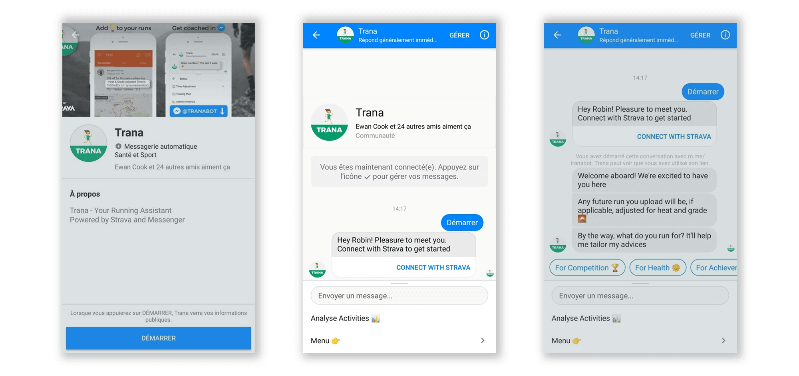

A/B Testing - The definitive guide to improving your product
Go from “we think” to “we know how much”.
Whether you are in product, design or growth, you probably come across the following questions:
- How could we increase our conversion rate?
- How can we improve our AARRR funnel?
- How successful has this feature launch been?
- Have these notifications increased retention?
You can get answers to those questions by correctly designing, running, and interpreting A/B tests
All you need to get started on your testing journey is:
- Basic statistics understanding
- Accurate and sufficient (>1000 monthly unique users) product data
The approach taken is rigorous and encourages best practices but:
- It will not demonstrate the maths behind frequentist hypothesis testing.
- It will not cover more advanced aspects such as A/B in a Bayesian context, multivariate-testing or Bonferroni correction.
Ready? Let’s get started!
0. Understand that split testing is a quantitative way to improve your product and that it’s easy to get it wrong
At its core, A/B testing is a way to compare two versions of a flow in your user journey in order to determine which one performs best.
To be able to get insights from your tests you will need enough people in each group (called control and experiment group, respectively) and enough of a conversion difference. Both values should be defined before running your test, as you’re about to see in point 3.
1. Select an important conversion step from your product’s funnel
Technically you can test anything, like changing the font on your terms and conditions page. However, you always want to pick the steps with the highest impact on your business outcome. Also, keep in mind the importance of data quantity - the higher the traffic the faster the conclusions - and of data quality - garbage in, garbage out.
Bad data, bad conclusions. Few data, slow conclusions.
Let’s get practical and do it for Trana, the example we’ll use for this post.

Trana is a Facebook Messenger ChatApp that provides extra running insights to its users. To do so it connects to their Strava account. Therefore, the moment at which we ask users to link their account is key. On top of this instinctive rationale, let’s analyze our full onboarding funnel. This can be done in a tool such as Mixpanel after having designed a tracking plan.
We can see that linking the account, going from Onboarding Started to Strava Connected, is the most impactful action both in absolute and relative terms. Got your own important step? Let’s continue!
2. Analyse the current Click-through-probability from this step to a desired action
The Click-through-probability (CTP) is the probability a given user clicks to get to the next step.
Its value is always between 0 and 1. It’s therefore not the same as the click-through-rate (CTR) which is the #clicks/#impression.
The CTP needs to be from the chosen step to a crucial action, not necessarily to the very next step, because you might otherwise end up at a local maximum. Here’s a simple example to understand this: let’s say that you now automatically redirect people from the home page to the pricing/premium page of your product. Your home to pricing conversion will be through the roof but you might want to assess whether people are in turn more likely to become premium users.
In short: optimize with the end, not the very next step, in mind.
We have seen from the full funnel that the CTP is 80%. In this case connecting their Strava account is clearly an important milestone so we can use this conversion probability as target metric.
3. Construct a hypothesis to kickstart your experiment
AB testing is nothing but methodologically assess whether a variation, called experiment, performs better than the current situation, called control.
An experiment starts by constructing a hypothesis. It can arise from gut-feeling, customers feedback or team discussions.
The hypothesis is the following: By seeing how Trana can help them run smarter, users will be less reluctant to connect their Strava account
4. Determine the sample size
This is the heart of A/B testing and the most jargon-heavy part of this guide. I’ll be happy to answer any question you might ask on twitter.
Running an A/B test involves creating a control and an experiment sample.
Sampling, assigning each user to one variation, will be done by splitting your users into two groups.
One user should always see the same variation, meaning that the sampling is deterministic, not simply with a 50% probability.
We usually sample according to odd/even IDs, many tools can take care of that for you.
A common mistake is to ignore sampling, directly change your product, and compare the new conversion probabilities with old ones.
This is leading teams to bad conclusions because the people coming to your product are changing across time. For example, you can’t say that the new flow (used by people coming from ads) is worst that the old one (that was used by your friends and family) because the seeing it are way less likely to bear with your product to begin with.
Your sample size will be determined by:
- Your baseline conversion rate
- The absolute minimum detectable effect (MDE/dmin) you pick. This is the minimum difference between control and experiment conversion rates you will be able to detect. If you have a lot of weekly traffic (vs the resulting sample size) pick the smallest difference you feel is worth. If you don’t, pick a difference that results in reasonably small sample size but still seems achievable.
- Alpha (α): By default keep it as 95%
- Beta (β): By default keep is as 20% which gives a 80% value for 1-β
The test will be run until both samples have a least 1030 observations. From the historic traffic you can assess how long that’ll be. Try to keep experiments running less than one month. The faster they run, the faster your product improves.
Compute your sample size, write it down and let the testing begin. Once you have sufficient data you can analyze the results.
5. Get valid insights from your results
5.1 Collect the data.
Wait until both variations have sufficient sample size and proceed to the data collection.
The experiment conversion is better. It’s a first good sign but we can’t stop there. So let’s proceed to a few checks.
5.2 Make sure your sampling worked as intended.
First, check that the sampling was not biased towards one of the groups. Here is the computation for our example:
5.3 Check if the experiment performed significantly better.
To assess whether the experiment is outperforming the control, plug your figures into the following formulas. dmin is the minimum detectable effect, N is the sample size, and X the conversion count, the number of people who took the desired action.
Where d̂ ± m is the confidence interval.
Here is how to interpret results:
- d̂ - m > dùëöùëñùëõ:
The experiment is outperforming the control (statistical and practical significance). Change flow to new version. - d̂ - m > 0:
The experiment is outperforming the control (statistical significance only). This is the case in our example. To get practical significance you can let the test run longer. You can also make a judgement call and go with your gut feeling. - d̂ - m < 0:
You can’t say that the experiment is outperforming the control. Keep the original version and generate new hypotheses.
6. Communicate your results.
Whatever the outcome, always communicate and document.
I recommend that you signal when the test starts and when it ends, using these key moments as an opportunity for stakeholders to voice their ideas and be up-to-date with the latest changes.
Also, always document and archive. You want the testing process to outlive you so that anyone taking over has a library of experiments to learn from.
This guide was made possible thanks to these amazing resources:
Here’s how you can go further:
Know when I post
I email once per quarter